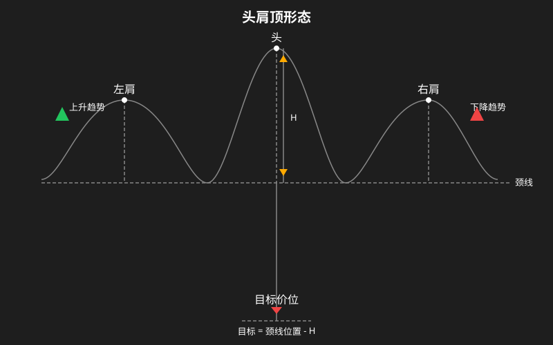
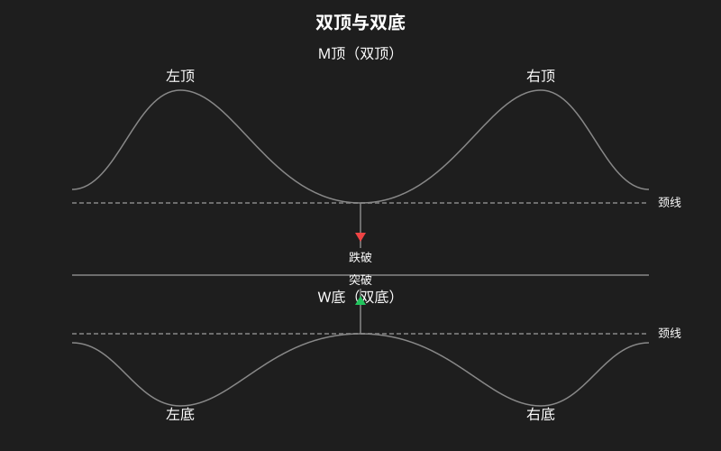

反转形态
反转形态（Reversal Patterns）是技术分析中判断趋势即将发生转向的关键信号。当上升趋势或下降趋势的动能开始衰竭时，价格往往会在关键位置形成特定的形态，预示趋势即将反转。
本章介绍三种最常见的反转形态：头肩顶/底、双顶(M顶)/双底(W底)、V型反转。
一、头肩顶 (Head and Shoulders Top)

头肩顶是最可靠的顶部反转形态之一，通常出现在上升趋势的末端。
形态特征
- 左肩 (Left Shoulder)：价格创出阶段新高后回调，成交量较大
- 头部 (Head)：价格再次拉升突破左肩高点创出新高，成交量可能比左肩略有缩小或持平
- 右肩 (Right Shoulder)：价格第三次拉升但无法突破头部高点，成交量明显萎缩，显示多头衰竭
- 颈线 (Neckline)：连接左肩回调低点和头部回调低点形成的趋势线
如何画颈线
颈线是一条趋势线，连接左肩回调的最低点和头部回调的最低点。颈线可以是水平的，也可以是向上或向下倾斜的。
- 如果颈线呈轻微向下倾斜，形态更可靠
- 如果颈线呈向上倾斜，反转信号较弱
目标价位计算
- 测量从头部最高点到颈线的垂直距离，记作 H
- 当价格跌破颈线后，从突破点向下量取同等距离 H
- 目标价位 = 突破点价格 - H
注意：这只是最小目标价，实际走势可能远超此目标。
成交量配合
- 左肩到头部：成交量逐渐放大，但头部成交量可能不如左肩
- 头部到右肩：成交量明显萎缩，这是关键信号
- 突破颈线时：必须放量下跌才可信
- 突破后的回抽（回踩颈线）：成交量通常萎缩
突破确认
- 收盘价明确跌破颈线（一般建议超过 3% 确认有效）
- 跌破后成交量显著放大
- 跌破后的回抽确认（价格反弹至颈线受阻，称为”逃命波”）
头肩底 (Head and Shoulders Bottom / Inverse H&S)
头肩底是头肩顶的镜像形态，出现在下降趋势末端，是底部反转信号。也称为倒转头肩顶。
形态特征
- 左肩：价格创出新低后反弹，成交量有所放大
- 头部：价格再次下跌跌破左肩低点创出新低，但成交量相比左肩可能缩小（卖压衰竭）
- 右肩：价格第三次下跌但无法跌破头部低点，成交量明显放大（买盘介入）
- 颈线：连接左肩反弹高点和头部反弹高点
目标价位计算
目标价 = 颈线突破点 + (头部最低点到颈线的垂直距离)
成交量配合（关键区别）
与头肩顶不同，头肩底的成交量特征是：
- 左肩反弹：放量
- 头部下跌：缩量（空头衰竭）
- 右肩反弹：显著放量（多头开始发力）
- 突破颈线：必须巨量放量突破
突破确认
- 价格以长阳线放量突破颈线
- 突破后回踩颈线获得支撑（缩量回踩是最佳买点）
二、双顶 (M顶) / 双底 (W底)

双顶 (Double Top / M顶)
出现在上升趋势末端，价格两次冲高受阻形成”M”字形。
形态特征
- 第一个顶：价格创出新高后回落，成交量较大
- 中间谷底：价格回落至某个支撑位
- 第二个顶：价格再次拉升到接近或略低于第一个顶的位置，但无法有效突破第一个顶的高点
- 颈线：中间谷底的最低点画一条水平线（或略微倾斜的支撑线）
形态要点
- 两个顶之间的距离至少要 1 个月以上才有意义（日线级别）
- 第二个顶的成交量应明显小于第一个顶（量价背离）
- 两个顶的高点可以略有差异（第二个顶可略高 1-3%，称为”刺破”）
目标价位计算
目标价 = 颈线价格 - (最高点到颈线的垂直距离)
突破确认
- 收盘价明确跌破颈线
- 跌破后往往有回抽确认的过程
- 跌破后颈线转化为压力位
双底 (Double Bottom / W底)
出现在下降趋势末端，价格两次探底形成”W”字形。
形态特征
- 第一个底：创出新低后反弹
- 中间峰顶：价格反弹至某个阻力位
- 第二个底：价格再次回落至接近或略高于第一个底的位置，无法跌破前低
- 颈线：中间峰顶画一条水平线
形态要点
- 两个底之间的距离至少 1 个月以上
- 第二个底的成交量通常萎缩（卖压衰竭）
- 突破颈线时必须放量
目标价位计算
目标价 = 颈线价格 + (颈线到最低点的垂直距离)
最佳买入点
- 激进买点：第二个底形成确认不再破位时
- 稳健买点：价格放量突破颈线时
- 保守买点：突破颈线后回踩颈线企稳时
三、V型反转
V型反转是最难把握但也是最剧烈的反转形态。它没有明显的过渡阶段，价格在一个尖点处急剧反转。
V型顶
形态特征
- 前期走势：持续的单边上涨，速度越来越快
- 反转点：在某一天突然出现巨量长阴线（或长上影线）“断头铡刀”
- 反转后走势：以同样的速度直线下跌
- 整个过程几乎不留喘息机会
成交量配合
- 加速上涨阶段：成交量持续放大
- 反转日：成交量达到天量（放量滞涨）
- 下跌阶段：可能缩量也可能放量
如何应对
- V型顶极难做空（真正的顶部只有一天）
- 一旦出现破位信号（大阴线跌破重要均线），立即离场
- 不要试图抄底，V型顶部之后的下跌往往空间巨大
V型底
形态特征
- 前期走势：持续单边下跌，恐慌情绪弥漫
- 反转点：某一天出现带有长长下影线的”锤子线”或”金针探底”
- 反转后走势：迅速拉回并以同样的速度上涨
- 通常伴随巨量换手（有人割肉，有人接盘）
成交量配合
- 恐慌下跌末期：成交量放大（多空激烈博弈）
- 反转日：成交量剧增
- 反转后继续上涨：如果成交量持续配合，反转可信度高
如何应对
- V型底很难抄到最低点
- 确认信号：反转日后出现放量阳线且创出新高
- 回踩不破反转日开始建仓
- 设置止损在反转日最低点下方
反转形态总结对比
| 形态 | 趋势前提 | 可靠性 | 成交量要求 | 最佳交易方式 |
|---|---|---|---|---|
| 头肩顶 | 上升趋势 | ★★★★★ | 右肩缩量，破位放量 | 破颈线做空 |
| 头肩底 | 下降趋势 | ★★★★★ | 右肩放量，突破巨量 | 破颈线做多 |
| 双顶(M顶) | 上升趋势 | ★★★★ | 二顶缩量，破位放量 | 破颈线做空 |
| 双底(W底) | 下降趋势 | ★★★★ | 二底缩量，突破放量 | 破颈线做多 |
| V型顶 | 加速上涨 | ★★ | 反转日天量 | 破位立即离场 |
| V型底 | 恐慌下跌 | ★★ | 反转日巨量 | 二次确认进场 |
⚠️ 重要提醒：反转形态只是概率信号，没有 100% 可靠的形态。任何时候都必须设好止损，控制风险。